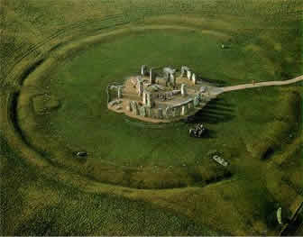

Des interprétations historiques à la théorie extraterrestre, Mysterious World fait le point sur ce lieu mythique de l’Angleterre préhistorique.
1) Stonehenge, l’œuvre des géants venus de Mars ?
Si la légende raconte que ce spectaculaire édifice de pierre est le dessein de géants et qu’il fut déplacé dans le sud Ouest de l’Angleterre par le magicien Merlin dans un but funéraire, Stonehenge fait toujours l’objet de théories controversées.
Œuvre des égyptiens ? Sanctuaire celtique ? Construction grecque ou maya ? Certains affirment même qu’il s’agit d’un temple dédié à Apollon, construit par le peuple atlante décrit par Platon.
Et si Stonehenge indiquait simplement un repère pour les êtres venus d’ailleurs ? Une étude menée par le Professeur David Percy confronte les photos du site martien Cydonia et Stonehenge. Par un jeu de transparence, le scientifique rapporte en effet des similitudes étonnantes entre les deux perspectives, à savoir notamment que l'emplacement de la bute en spirale sur Cydonia correspond exactement au cercle de pierre de Stonehenge ! Ce phénomène extraordinaire a également pu être remarqué sur le site mégalithique de Gastonbury dont le mont Thor correspond au sommet de la pyramide à cinq côtés observée sur Mars.
2) De la fonction astronomique au purgatoire extraterrestre
Alors que les astronomes voyait en ces pierres
un calendrier à dimension surnaturel, les historiens un temple
druidique voué aux sacrifices humains, cette découverte
jette un pavé dans la marre.
|
||||||

Mais alors, quelle en était la fonction exacte ? Un passage obligé pour les visiteurs venus d’ailleurs ? Un observatoire terrestre ? Une base ? Un purgatoire ?
La question reste ouverte.